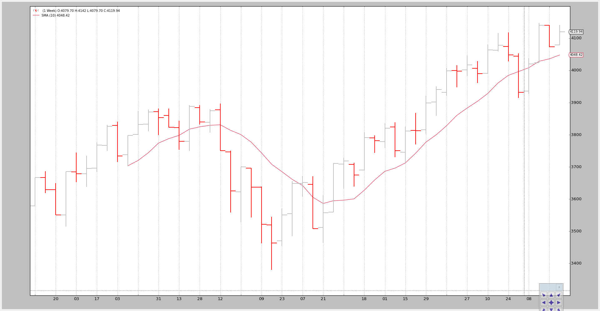

Data - Replay¶
The time is gone and testing a strategy against a fully formed and closed bar is good, but it could be better.
This is where Data Replay comes in to help. If:
- The strategy operates on data with a timeframe X (example: daily)
and
- Data for a smaller timeframe Y (example: 1 minute) is available
Data replay does exactly what the name implies:
Replay a daily bar using the 1 minute data
This is of course not exactly how the market developed, but it is far better than looking at the daily fully formed and closed bar in isolation:
If the strategy operates in realtime during the formation of the daily bar,
the approximation of the formation of the bar gives a chance to replicate the
actual behavior of the strategy under real conditions
Putting Data Replay into action follows the regular usage patterns of
backtrader
- Load a data feed
- Pass the data to
DataReplayerwhich is yet another data feed that will work on the loaded data feed- Pass the new data feed to cerebro
- Add a strategy
- And run ... WITH PRELOAD DISABLED*
Note
Preloading cannot be supported when data is being replayed because each bar is actually built in real-time.
For the sake of working with a example the standard 2006 daily data will be replayed on a weekly basis. Which means:
- There will finally be 52 bars, one for each week
- Cerebro will call
prenextandnexta total of 255 times, which is the original count of daily bars
The trick:
- When a weekly bar is forming, the length (
len(self)) of the strategy will remain unchanged.- With each new week the length will increase by one
Some examples below, but first the sauce of the test script in which the data is
loaded and passed to a replayer ... and run with preload=False to
disable preloading (COMPULSORY)
dataname=datapath)
tframes = dict(
daily=bt.TimeFrame.Days,
weekly=bt.TimeFrame.Weeks,
monthly=bt.TimeFrame.Months)
# Handy dictionary for the argument timeframe conversion
# Resample the data
data_replayed = bt.DataReplayer(
dataname=data,
timeframe=tframes[args.timeframe],
compression=args.compression)
# First add the original data - smaller timeframe
cerebro.adddata(data_replayed)
# Run over everything
cerebro.run(preload=False)
Example - Replay Daily to Weekly¶
The invocation of the script:
$ ./data-replay.py --timeframe weekly --compression 1
The chart cannot unfortunately show us the real thing happening in the background, so let’s have a look at the console output:
prenext len 1 - counter 1
prenext len 1 - counter 2
prenext len 1 - counter 3
prenext len 1 - counter 4
prenext len 1 - counter 5
prenext len 2 - counter 6
...
...
prenext len 9 - counter 44
prenext len 9 - counter 45
---next len 10 - counter 46
---next len 10 - counter 47
---next len 10 - counter 48
---next len 10 - counter 49
---next len 10 - counter 50
---next len 11 - counter 51
---next len 11 - counter 52
---next len 11 - counter 53
...
...
---next len 51 - counter 248
---next len 51 - counter 249
---next len 51 - counter 250
---next len 51 - counter 251
---next len 51 - counter 252
---next len 52 - counter 253
---next len 52 - counter 254
---next len 52 - counter 255
As we see the internal self.counter variable is keeping track of each call
to either prenext or next. The former being called before the applied
Simple Moving Average produces a value. The latter called when the Simple Moving
Average is producing values.
The key:
- The length (len(self)) of the strategy changes every 5 bars (5 trading days in the week)
The strategy is effectively seeing:
How the weekly bar developed in 5 shots.
This, again, doesn’t replicate the actual tick-by-tick (and not even minute, hour) development of the market, but it is better than actually seeing a bar.
The visual output is that of the weekly chart which is the final outcome the system is being tested again.
Example 2 - Daily to Daily with Compression¶
Of course “Replaying” can be applied to the same timeframe but with a compression.
The console:
$ ./data-replay.py --timeframe daily --compression 2
prenext len 1 - counter 1
prenext len 1 - counter 2
prenext len 2 - counter 3
prenext len 2 - counter 4
prenext len 3 - counter 5
prenext len 3 - counter 6
prenext len 4 - counter 7
...
...
---next len 125 - counter 250
---next len 126 - counter 251
---next len 126 - counter 252
---next len 127 - counter 253
---next len 127 - counter 254
---next len 128 - counter 255
This time we got half the bars as expected because of the factor 2 requested compression.
The chart:
Conclusion¶
A reconstruction of the market development is possible. Usually a smaller timeframe set of data is available and can be used to discretely replay the timeframe which the system operates on.
The test script.
from __future__ import (absolute_import, division, print_function,
unicode_literals)
import argparse
import backtrader as bt
import backtrader.feeds as btfeeds
import backtrader.indicators as btind
class SMAStrategy(bt.Strategy):
params = (
('period', 10),
('onlydaily', False),
)
def __init__(self):
self.sma = btind.SMA(self.data, period=self.p.period)
def start(self):
self.counter = 0
def prenext(self):
self.counter += 1
print('prenext len %d - counter %d' % (len(self), self.counter))
def next(self):
self.counter += 1
print('---next len %d - counter %d' % (len(self), self.counter))
def runstrat():
args = parse_args()
# Create a cerebro entity
cerebro = bt.Cerebro(stdstats=False)
cerebro.addstrategy(
SMAStrategy,
# args for the strategy
period=args.period,
)
# Load the Data
datapath = args.dataname or '../datas/sample/2006-day-001.txt'
data = btfeeds.BacktraderCSVData(
dataname=datapath)
tframes = dict(
daily=bt.TimeFrame.Days,
weekly=bt.TimeFrame.Weeks,
monthly=bt.TimeFrame.Months)
# Handy dictionary for the argument timeframe conversion
# Resample the data
data_replayed = bt.DataReplayer(
dataname=data,
timeframe=tframes[args.timeframe],
compression=args.compression)
# First add the original data - smaller timeframe
cerebro.adddata(data_replayed)
# Run over everything
cerebro.run(preload=False)
# Plot the result
cerebro.plot(style='bar')
def parse_args():
parser = argparse.ArgumentParser(
description='Pandas test script')
parser.add_argument('--dataname', default='', required=False,
help='File Data to Load')
parser.add_argument('--timeframe', default='weekly', required=False,
choices=['daily', 'weekly', 'monhtly'],
help='Timeframe to resample to')
parser.add_argument('--compression', default=1, required=False, type=int,
help='Compress n bars into 1')
parser.add_argument('--period', default=10, required=False, type=int,
help='Period to apply to indicator')
return parser.parse_args()
if __name__ == '__main__':
runstrat()


{kind=link}
{kind=link}